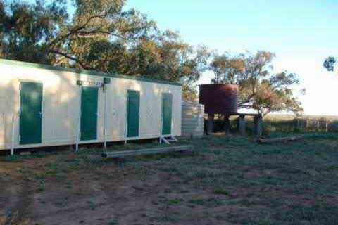
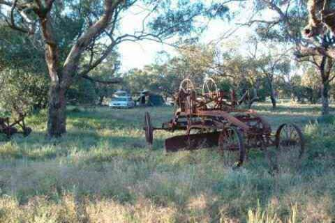
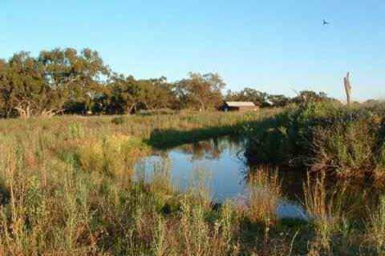
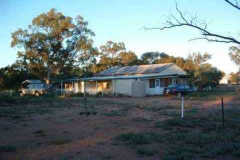
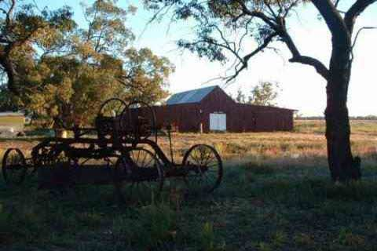

PHONE
PHONE GET DIRECTIONS
GET DIRECTIONS- 
-

- 
- 
- 
- 
There is no after hours access, and after rain access may be difficult, so be certain to book ahead.
COORDINATES: 30º53'55.31"S, 147º27'56.90"E
LOCATION: From Warren, take the road to Carinda for just over 100kms and turn right at the Telstra tower into Gibson's Way and Willie Retreat is about 2kms further on. And, see the map available on the website.